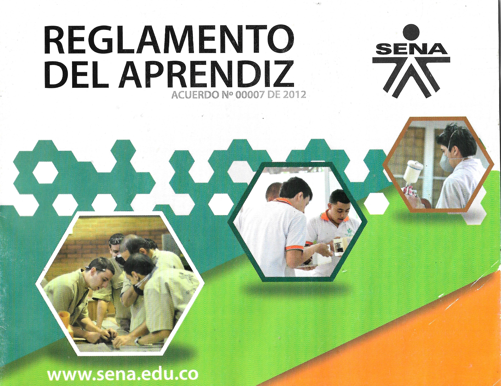

INDUCCION SENA
REGLAMENTO SENA
Los reglamentos del SENA son un conjunto de normas y reglas que deben cumplir los aprendices durante su proceso de formación.
Estas normas buscan mantener el orden, el respeto, la responsabilidad y la buena convivencia dentro
10 reglamentos del SENA
- Cumplir con el horario establecido de clases y actividades.
- Respetar a instructores, compañeros y personal administrativo.
- Portar bien el uniforme
- Cuidar las instalaciones, equipos y materiales del centro de formación.
- No usar el celular en clase sin autorización del instructor.
- resentar las actividades y evidencias en las fechas indicadas.
- Mantener una actitud de responsabilidad y compromiso.
- No realizar actos de violencia,discriminacion o acoso
- Cumplir con las normas de seguridad industrial en talleres y laboratorios.
- Representar con respeto y buena conducta al SENA dentro y fuera de la institución.
🎯 Mis expectativas para este año en el SENA
Este año en el SENA espero aprender muchos conocimientos nuevos relacionados con mi técnico, mejorar mis habilidades prácticas y desarrollar más responsabilidad. También quiero fortalecer mi trabajo en equipo, ser más disciplinado y aprovechar todas las oportunidades que me ofrezca la institución. Mi meta es terminar el año con buenas calificaciones y más experiencia.
